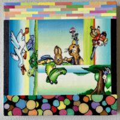

What’s The Story: Cindy Bernhard, Larissa Borteh, Mark Ottens, Tom Torluemke, and Frank Trankina
The Riverside Arts Center’s Freeark Gallery is pleased to present What’s The Story, guest curated by William Eckhardt Kohler. This group exhibition of paintings will feature the art of Cindy Bernhard, Larissa Borteh, Mark Ottens, Tom Torluemke, and Frank Trankina.
What’s The Story brings together five painters with varied approaches and relationships to narrative in their work; Cindy Bernhard, Larissa Borteh, Mark Ottens, Tom Torluemke and Frank Trankina.
Human beings are storytelling animals and painting has historically been used in service, to tell commonly recognized narratives, the lives of the saints as a particularly art historically rich example. Viewers in the past, often illiterate, recognized the events and characters depicted via delineated rules of portrayal. As vehicles for storytelling have proliferated, through photography, film, tv, video games and now, as we know perhaps too well, social media, painting hasn’t had to serve the world in the same way.
But painting is in many ways not best suited to direct storytelling especially when the story is not already known. In a painting, images are suspended rather than unfolding sequentially, causing them to be closer to poetics in our apprehension. And . . . what if a viewer had no idea who those various saints were and what they did? We will never know the stories that were likely connected to the Paleolithic cave paintings, but we can and do make up stories about their meaning.
When we say “Every picture tells a story” what we really mean is that given a picture, especially one animated by a figure, the viewer will find or make up a story. Even in image-making which purports to be non-objective, viewers will decide to both name things and try to determine what those things are doing and why. People create stories all the time, in our social interactions, and in how we construct memories. The archetypal psychologist James Hillman, in his book Healing Fictions, proposes that the process of therapy is the concoction of fiction; telling our stories as a way of making raw chaotic experience legible and meaningful.
This exhibition explores how these five painters grapple with the ongoing need, urge, preoccupation and compulsion to tell stories; or alternately to frustrate and even sabotage received narrative forms.
How simple and direct should the visual language telegraph meaning? How much dissolution versus resolution of form is necessary to carry the image? At what level and in what way does the artist choose to utilize the imagery and forms of our sprawling collective popular culture or to delve into the potential obscurity of personal experience as source?
Cindy Bernhard’s paintings are constructed around a stage-like cause and effect. If this happens then that is the result. The most common protagonists in Bernhard’s paintings are cats. In Espíritu, a band of reefer smoke blows past a cat under a table whose one eye has been comically transformed. The visual mode is overtly artificial – lurid lighting, bright colors, super sharp edges and smoothed forms free of blemishes. This is the world of the phone and computer screen, in a vacuum with minimal props from which to infer a reality or non-reality.
Larissa Borteh makes gestural alla prima paintings in the lineage of painterly abstraction. They ask the viewer to be aware of the painter’s body moving energetically, taking the narrative out of image and into action, like old-school action painting. At the same time, they are rooted in specific experiences of the artist, for example a bicycle accident. In Shifters, a loosely indicated head is suspended and held aloft by a tangle of gestural brushwork that evoke roots, limbs and organs. This is painterly performance as narrative embodiment rather than either abstraction or representational storytelling.
Mark Ottens makes paintings brimming with competing visual information that he describes as being like doodles in a high school notebook. Contained within a grid framework coexists a melee of hallucinogenic patterns, geometric shapes, bizarre faces and appropriated comic strip imagery. Comics demand simplicity and directness to convey a clear message. But Ottens completely sabotages that clarity in the proliferation of competing forms. The effect is something like a playful and meticulous Op-art horror fantasy of the Id, almost entirely resistant to interpretation. Titles, such as The Occurrence of the Accidental Instance at the Elkwood, convey the existence of a troubling event, but end up adding to the obfuscation pile-up.
Among one of the many practices that Tom Torluemke has employed over the years is to make paintings begun from drawing with his eyes closed. The resultant paintings, at turns comic and tragic, are at once specific and indeterminate. Everything is familiar in Stroll Through the Neighborhood; cars, pedestrians, trees, houses, puddles, dogs being walked. But weaving through this world, painted in delineated comic-book colors, lines and forms lift off in hypnagogic metamorphosis. A male figure charges in from the bottom of the frame, but whether in threat or warning is unclear. The world appears to be unraveling but how and why is left to the viewer’s imagination.
Frank Trankina is best known for his meticulously painted still-life dramas, drawn from his large collection of vintage toys and figurines who take on the roles of actors on a stage and thus a sly merger of classical genres. A recent body of work depicts toy visitors to made up museum galleries, sometimes ‘hung’ in a further twist with abstract painting. Gallery of Gallery Paintings is absent the toy protagonists but rather depicts a wall hung with Baroque paintings of connoisseurs inspecting and enjoying massive fictional art collections. The actors on the stage in this case have retreated deeper into the fictional world of the painting; A stage within a stage within a stage. Story, we are reminded, is an illusion and even a delusion.
–William Eckhardt Kohler, guest curator
Cindy Bernhard American, born 1989, lives and works in Chicago, IL. Bernhard received her MFA from Laguna College of Art and Design in 2014 and her BFA from the American Academy of Art in 2011. Recent and upcoming solo exhibitions include Plato Gallery, New York, NY; Volery Gallery, Dubai, United Arab Emirates; Andrew Rafacz Gallery, Chicago, IL; Long Story Short, New York, NY; Richard Heller Gallery, Santa Monica, CA; Monya Rowe Gallery, New York, NY; Shelter In Place Gallery, Boston, MA; and Vital Signs, Milwaukee, WI. Group exhibitions include Harpers, New York, NY; The Bunker Art Space, Palm Beach, FL; De Boer Gallery, Los Angeles, CA; Steven Zevitas Gallery, Boston, MA; Casa Santa Ana, Panama City, Panama; Ukrainian Institute of Modern Art, Chicago, IL; Eve Leibe Gallery, London, UK; and Lubeznik Center for The Arts, Michigan City, IN. She has exhibited at art fairs in Chicago, Miami, New York, Palm Springs and Beirut. Her work has been written about in many publications, including Bad At Sports, Broccoli, Hypebeast, Juxtapose, Newcity, New American Paintings, and New York Magazine. Her work is in numerous private and public collections.
www.cindybernhardart.com
Larissa Borteh was born in Columbus, Ohio. She received an MFA from the School of the Art Institute of Chicago in 2014 and a BFA from the School of Visual Arts in New York City in 2010. Recent exhibitions include Devening Projects, Chicago, IL; Cuff & Post, Chicago, IL; Patient Info, Chicago, IL; Folio, Green Bay, WI; Julius Caesar Gallery, Chicago, IL; Hyde Park Art Center, Chicago, IL; Zolla Lieberman Gallery, Chicago, IL; Andrew Rafacz Gallery, Chicago, IL; Minotaur Projects, Los Angeles, CA; Cranbrook Art Museum, Bloomfield Hills, MI; The Union League Club, Chicago, IL; Skylight Gallery, New York, NY; and the Visual Arts Gallery, New York, NY. Borteh has been a recipient of the Leon Levy Foundation Grant, the George and Ann Siegel Fellowship, and a Dave Bown Projects Award. She has been an artist-in-residence at the Vermont Studio Center, Johnson, Vermont; the Association of Icelandic Visual Artists (SÍM), Reykjavik, Iceland; and Kunstnarhuset Messen, Ålvik, Norway, and she was a MacDowell Fellow. Borteh currently lives and works in Chicago, IL, where she is an Adjunct Associate Professor at the School of the Art Institute of Chicago.
www.larissaborteh.com
Mark Ottens lives and works in Southeast Wisconsin. His art combines figurative, image-based painting juxtaposing disparate images with abstract and highly detailed, pattern-oriented painting. He received an MFA from the University of Illinois, Chicago and a BFA from the School of the Art Institute of Chicago. Ottens has exhibited in solo and group exhibitions including the Portrait Society Gallery, Milwaukee, WI; Tory Folliard Gallery, Milwaukee, WI; Carl Hammer Gallery, Chicago, IL; John Michael Kohler Art Center, Sheboygan, WI; Ukrainian Institute of Modern Art, Chicago, IL; Zolla Lieberman Gallery, Chicago, IL; Bucheon Gallery, San Francisco, CA; Brasil Gallery, Houston, TX; and the Smart Museum of Art, University of Chicago. His art has been featured in the Shepherd Express, Urban Milwaukee, and Artdose Magazine, among others. Ottens has been selected three times for inclusion in the publication New American Paintings. His art is held in numerous public and private collections.
Instagram: @markottensart
Tom Torluemke, born in Chicago, Illinois, is a multidisciplinary artist based in Indiana. His 40+ year practice includes painting, drawing, sculpture, performance, and installation in various media. Highlights of solo and group exhibitions include “Tom Torluemke: Live! On Paper, 1987–2024” at the Chicago Cultural Center; “Gravity” at the Ukrainian Institute of Modern Art, Chicago; “Fearsome Fable – Tolerable Truth” at the Hyde Park Art Center in Chicago; “The Inland See: Contemporary Art Around Lake Michigan” curated by James Yood at Western Michigan University; “In the Company of Strangers” at the Brauer Museum of Art in Valparaiso, Indiana; “Bounce” at the South Bend Museum of Art in Indiana; “Peace in the Arts” at the Baíhai International Peace Conference in San Francisco; and the “In Indiana” series at the Indianapolis Museum of Art. Torluemke has spoken at the Chicago Humanities Festival and TEDx Purdue U at Purdue University and has received the DeHaan Artist of Distinction Award as well as the Efroymson Contemporary Arts Fellowship. His art has been reviewed by Artforum, New Art Examiner, Newcity, and Chicago Magazine, among many others.
www.tomtorluemke.com
Frank Trankina is an Internationally exhibited artist/painter. Born in Chicago, he received his MFA in Painting and Drawing from the School of the Art Institute of Chicago. In his studio practice, Trankina creates narratives by combining characters from his extensive collection of remnants of popular culture within the context of still life painting. Trankina received the prestigious Alexander Rutsch Award in Painting and Illinois Arts Council Fellowship Award. His exhibitions include: University of Cambridge Kettle’s Yard, England; Megumi Ogita, Tokyo, Japan, Exco Daegu, South Korea; Art Busan, Busan, South Korea; Alpineum Produzentengalerie, Lucerne, Switzerland; 100 Tonson Foundation and VER Gallery, Bangkok, Thailand; Tibor de Nagy Gallery SPRING/BREAK SHOW, New York, NY; Art Basel, Miami; American University Museum, Washington, DC; Illinois State Museum; Chicago Cultural Center; and Union League Club of Chicago. Trankina’s paintings are in collections internationally and nationally including the Elmhurst Art Museum, Rockford Art Museum, John Michael Kohler Art Preserve, and numerous other institutions. Trankina is Professor of Art at Northern Illinois University.
www.franktrankina.com
William Eckhardt Kohler was born in Boston in 1962, and raised in Philadelphia. He has exhibited internationally including New York, Chicago, London, Paris, and Charlotte, NC. Most recently, in 2025 he had an exhibition at 65Grand in Chicago and is currently included in the exhibition Bodies and Souls, concurrent at the Pennsylvania Academy of Fine Arts and Woodmere Art Museum, in Philadelphia. Kohler received a Sharpe-Walentas Studio Residency, Brooklyn, NY in 2022-3 and a Pollock-Krasner Grant in 2020. He has taught drawing, painting, and art history at numerous schools including the School of the Art Institute of Chicago, American Academy of Art, and at Indiana University Northwest. He has an MFA from The School of the Art Institute of Chicago (’87) and a BFA from The Maryland Institute College of Art (’85). Drawing upon his personal experiences in nature, the studio, and art more broadly, Kohler’s narrative paintings open a door to the emotional and spiritual realm. Continuing to take on themes as large as death, transformation, and regeneration, his recent work is a reflection on the possibilities within loss.
www.williamekohler.com
What’s The Story: Cindy Bernhard, Larissa Borteh, Mark Ottens, Tom Torluemke, and Frank Trankina
Opening Reception: Sunday, June 14, 2026, 3:00 – 6:00 pm
Artist Talk: Saturday, July 11, 2026, 2:00 pm
Exhibition Dates: June 14 – July 25, 2026
Gallery Hours: Thursdays, Fridays, and Saturdays, 1:00 – 5:00 pm